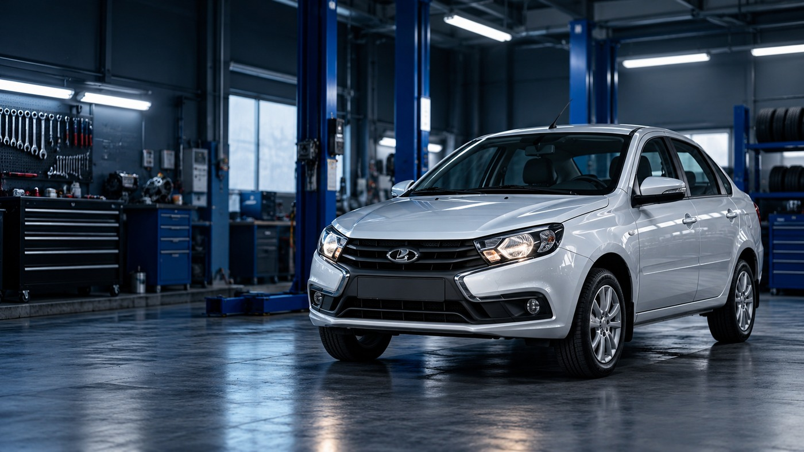

Модели ВАЗ
›Каталог из 10 автомобилей
Неисправности
›10 типовых проблем и решений
Руководства
›Пошаговый ремонт и инструменты
ПОПУЛЯРНЫЕ МОДЕЛИ
Выберите автомобиль
У каждой модели теперь есть отдельная страница с характерными проблемами.


БАЗА НЕИСПРАВНОСТЕЙ
Частые проблемы

Двигатель
Двигатель не заводится
Стартер не крутит, крутит без запуска или мотор запускается и сразу глохнет.

Охлаждение
Двигатель перегревается
Температура растёт выше обычной, вентилятор не включается или есть утечка.
ГАРАЖНЫЙ РЕЖИМ
Руководства по ремонту